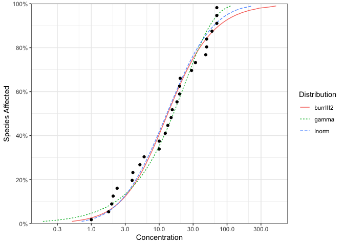
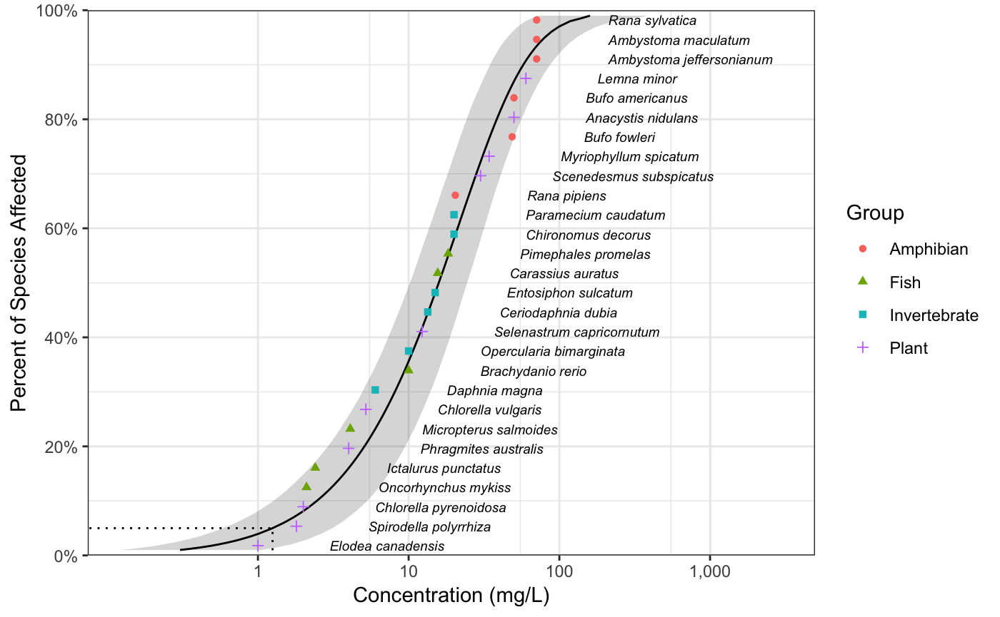

ssdtools is an R package to plot and fit Species Sensitivity Distributions (SSD).
SSDs are cumulative probability distributions which are fitted to toxicity concentrations for multiple species. The ssdtools package uses Maximum Likelihood to fit log-normal, log-logistic, gompertz, lgumbel, gamma or weibull distributions. Multiple distributions can be averaged using Information Criteria. Confidence intervals on fits and hazard concentrations are produced by bootstrapping.
Introduction
ssdtools provides a data set for several chemicals including Boron.
library(ssdtools)
boron_data
#> # A tibble: 28 x 5
#> Chemical Species Conc Group Units
#> <chr> <chr> <dbl> <fct> <chr>
#> 1 Boron Oncorhynchus mykiss 2.1 Fish mg/L
#> 2 Boron Ictalurus punctatus 2.4 Fish mg/L
#> 3 Boron Micropterus salmoides 4.1 Fish mg/L
#> 4 Boron Brachydanio rerio 10 Fish mg/L
#> 5 Boron Carassius auratus 15.6 Fish mg/L
#> 6 Boron Pimephales promelas 18.3 Fish mg/L
#> 7 Boron Daphnia magna 6 Invertebrate mg/L
#> 8 Boron Opercularia bimarginata 10 Invertebrate mg/L
#> 9 Boron Ceriodaphnia dubia 13.4 Invertebrate mg/L
#> 10 Boron Entosiphon sulcatum 15 Invertebrate mg/L
#> # ... with 18 more rowsMultiple distributions can be fit using ssd_fit_dists()
and plot using the ggplot2 generic autoplot

The goodness of fit can be assessed using ssd_gof
ssd_gof(boron_dists)
#> # A tibble: 6 x 9
#> dist ad ks cvm aic aicc bic delta weight
#> * <chr> <dbl> <dbl> <dbl> <dbl> <dbl> <dbl> <dbl> <dbl>
#> 1 lnorm 0.507 0.107 0.0703 239. 240. 242. 1.42 0.133
#> 2 llog 0.487 0.0993 0.0595 241. 241. 244. 3.40 0.049
#> 3 gompertz 0.602 0.120 0.0822 238. 238. 240. 0 0.271
#> 4 lgumbel 0.829 0.158 0.134 244. 245. 247. 6.58 0.01
#> 5 gamma 0.441 0.117 0.0555 238. 238. 240. 0.019 0.268
#> 6 weibull 0.435 0.117 0.0543 238. 238. 240. 0.014 0.269and the model-averaged 5% hazard concentration estimated using ssd_hc
print(boron_hc5)
#> # A tibble: 1 x 5
#> percent est se lcl ucl
#> * <int> <dbl> <dbl> <dbl> <dbl>
#> 1 5 1.25 0.734 0.600 3.20Model-averaged predictions complete with confidence intervals can be produced using the stats generic predict
and plotted together with the original data using ssd_plot.
ssd_plot(boron_data, boron_pred, shape = "Group", color = "Group", label = "Species",
xlab = "Concentration (mg/L)", ribbon = TRUE) + expand_limits(x = 3000)
The ssdtools manual is available at https://bcgov.github.io/ssdtools/articles/ssdtools-manual.html.
A shiny webpage developed for non-R-users is available at https://poissonconsulting.shinyapps.io/ssdtools/.
The data included in ssdtools are sourced from the Canadian environmental quality guidelines published by the Canadian Council of Ministers of the Environment. See the data-raw folder for more information.
Getting Help or Reporting an Issue
To report bugs/issues/feature requests, please file an issue.
How to Contribute
If you would like to contribute to the package, please see our CONTRIBUTING guidelines.
Please note that this project is released with a Contributor Code of Conduct. By participating in this project you agree to abide by its terms.
License
The code is released under the Apache License 2.0
Copyright 2015 Province of British Columbia
Licensed under the Apache License, Version 2.0 (the "License");
you may not use this file except in compliance with the License.
You may obtain a copy of the License at
http://www.apache.org/licenses/LICENSE-2.0
Unless required by applicable law or agreed to in writing, software
distributed under the License is distributed on an "AS IS" BASIS,
WITHOUT WARRANTIES OR CONDITIONS OF ANY KIND, either express or implied.
See the License for the specific language governing permissions and
limitations under the License.